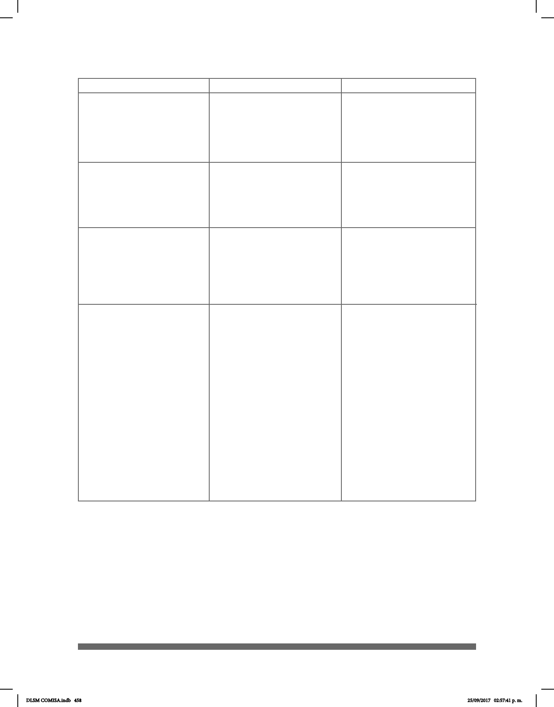

458
/
¡ !
++
pro-
REAL/VERDAD
_____¡ !_
ABURRIDO
__¡ !_
DEBER
DIA++
ARBOL++
SILLA++
pro-YO
pro-ELLA
USTEDES?
pro-DOS-DE-NOSOTROS
“Dos de nosotros/nosotros
dos” (nosotros/ambos)
pro-DOS-DE-USTEDES
“Dos de ustedes/ustedes
dos” (ustedes/ambos)
Una barra entre palabras
de la glosa se utiliza
cuando una seña tiene
dos equivalentes distintos
en español.
Los signos de exclamación
se utilizan para dar énfasis;
la seña muestra énfasis.
Reduplicación
(también llamada repetición
/ Duplicación) (Movimiento
repetido de una seña)
Las señas de los pronombres
personales YO, TÚ, ÉL,
ELLA se hacen usando
sólo el dedo índice. El
dedo índice apunta hacia
las personas de las que
se habla (si están presentes)
o hacia un espacio si no
están en ese momento.
NOSOTROS (AS) Con la
conguración manual “N”
se hace un movimiento
de derecha a izquierda
semicircular.
Símbolos
Ejemplos
Descripción
DLSM COMISA.indb 458 25/09/2017 02:57:41 p. m.